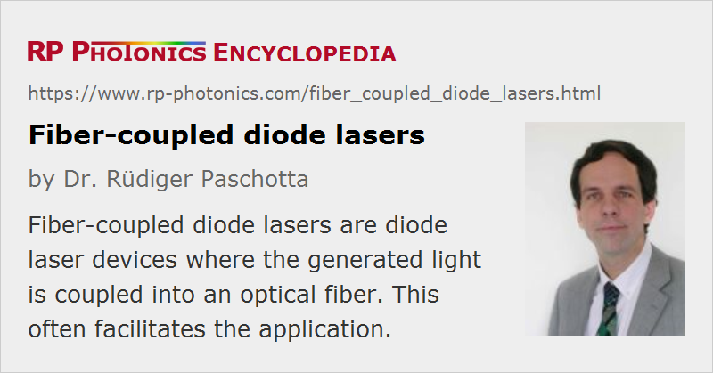

Fiber-coupled Diode Lasers
Definition: diode laser devices where the generated light is coupled into an optical fiber
Alternative term: pigtailed diode lasers
More general term: diode lasers
German: fasergekoppelte Diodenlaser
Categories: fiber optics and waveguides, lasers
How to cite the article; suggest additional literature
Author: Dr. Rüdiger Paschotta
For many applications, it is convenient to couple the output of a laser diode into an optical fiber in order to deliver the light to the place where it is needed. Fiber-coupled (also called fiber-integrated or fiber-pigtailed) diode lasers have several advantages:
- The light exiting the fiber has a circular and smooth (homogenized) intensity profile and a symmetric beam quality, which is in many cases very convenient. For example, less sophisticated optics are required for generating a circular pump spot for an end-pumped solid-state laser.
- It becomes possible to remove the laser diodes together with their cooling arrangements e.g. from a solid-state laser head, which can then be more compact, and more space is left for other parts at this place.
- Defective fiber-coupled diode lasers can easily be replaced without changing the alignment of the device where the light is used.
- Fiber-coupled devices can be easily combined with other fiber-optic components.
Types of Fiber-coupled Diode Lasers
Many diode lasers are thus sold in fiber-coupled form, with robust fiber coupling optics (e.g., a permanent laser-welded fiber attachment) built into the laser package. The used fibers and techniques differ very much for different diode lasers:
The simplest case is that of a VCSEL (vertical cavity surface-emitting laser), which usually emits a beam with high beam quality, moderate beam divergence, no astigmatism, and a circular intensity profile. A simple spherical lens is sufficient for imaging the emitting spot to the core of a single-mode fiber. The coupling efficiency can be of the order of 70–80%. It is also possible to couple directly (butt couple) the fiber to the emitting surface of the VCSEL.
Small edge-emitting laser diodes also emit in a single spatial mode, thus in principle also allowing efficient coupling to a single-mode fiber. However, the coupling efficiency can be significantly degraded by the ellipticity of the beam, if a simple spherical lens is used. Also, the beam divergence is relatively high in at least one direction, requiring a lens with relatively high numerical aperture. Another problem is astigmatism of the diode output, particularly for gain-guided diodes; this may be compensated with an additional weak cylindrical lens. With output powers of up to a few hundred milliwatts, fiber-coupled gain-guided LDs can be used for, e.g., pumping erbium-doped fiber amplifiers.
Broad area laser diodes are spatially multimode in the long direction of the emitter. If a circular beam is simply shaped with a cylindrical lens (e.g. a fiber lens, see Figure 3) and then launched into a multimode fiber, a lot of the brightness (radiance) will be lost, because the high beam quality in the fast axis direction can not be utilized. A power of e.g. 1 W can be launched into a multimode fiber with a 50-μm core diameter and a numerical aperture (NA) of 0.12. This is sufficient e.g. for pumping a low-power bulk laser, e.g. a microchip laser. Even a launched power of 10 W is possible.
An improved technique for broad-area lasers is based on reshaping the beam for a symmetrized beam quality (and not only symmetrized beam radius) before launching. That allows for a higher brightness.
For diode bars (diode arrays), the problem of asymmetric beam quality is even more severe. Here, the outputs of individual emitters may be coupled into separate fibers of a fiber bundle. The fibers are arranged in a linear array on the side of the diode bar, but as a circular array on the output end. Alternatively, some kind of beam shaper for symmetrizing the beam quality may be used before launching into a single multimode fiber. This can be done e.g. with a two-mirror beam shaper or with some microoptical elements. It is possible e.g. to couple 30 W into a fiber with 200-μm (or even 100-μm) core diameter and an NA of 0.22. Such a device can be used for, e.g., pumping an Nd:YAG or Nd:YVO4 laser with roughly 15 W of output power.
For diode stacks, fibers with still larger core diameters are used. It is possible e.g. to couple hundreds of watts (or even several kilowatts) of optical power into a fiber with a 600-μm core diameter and NA = 0.22.
Drawbacks of Fiber Coupling
Some potential disadvantages of fiber-coupled diode lasers, compared with free-space emitting lasers, are:
- The cost is higher. This may be offset, however, by the savings from simpler beam processing and delivery.
- The output power is slightly reduced, and more importantly the brightness (radiance). The loss of brightness can be substantial (more than an order of magnitude) or rather small, depending on the technique of fiber coupling. In some cases, this may not matter, but in other cases it introduces significant challenges e.g. for the design of a diode-pumped bulk laser or a high-power fiber laser.
- In most cases (particularly with multimode fibers), the fiber is not polarization-maintaining. The fiber output will then normally be partially polarized, and the polarization state can change when the fiber is moved or the temperature changes. This can cause substantial stability problems of diode-pumped solid-state lasers when the pump absorption is polarization-dependent (as in, e.g., Nd:YVO4).
One may also not obtain a fiber-coupled laser diode product for each optical wavelength.
Beam Quality of the Fiber Output
The beam quality of the fiber output is often not specified; in many cases, only the fiber core diameter and the numerical aperture (NA) are known, and a step-index multimode fiber is assumed. There is no equation to calculate exactly the beam quality in that case, because it depends on the distribution of optical power over the fiber modes, and this distribution itself depends on the launching conditions. However, the beam quality M2 factor can be roughly estimated, assuming that the power is well distributed over the modes, so that the numerical aperture represents a reasonable (perhaps slightly too high) estimate for the actual beam divergence. This leads to the equation
where a is the fiber core radius (i.e., half the core diameter). If the light is launched mostly in lower-order guided fiber modes, the beam quality can also be substantially better, but may then be degraded by strong bending of the fiber.
Suppliers
The RP Photonics Buyer's Guide contains 74 suppliers for fiber-coupled diode lasers. Among them:
Questions and Comments from Users
Here you can submit questions and comments. As far as they get accepted by the author, they will appear above this paragraph together with the author’s answer. The author will decide on acceptance based on certain criteria. Essentially, the issue must be of sufficiently broad interest.
Please do not enter personal data here; we would otherwise delete it soon. (See also our privacy declaration.) If you wish to receive personal feedback or consultancy from the author, please contact him e.g. via e-mail.
By submitting the information, you give your consent to the potential publication of your inputs on our website according to our rules. (If you later retract your consent, we will delete those inputs.) As your inputs are first reviewed by the author, they may be published with some delay.
See also: laser diodes, fibers, beam quality, brightness, polarization of light
and other articles in the categories fiber optics and waveguides, lasers
|  |
If you like this page, please share the link with your friends and colleagues, e.g. via social media:
These sharing buttons are implemented in a privacy-friendly way!